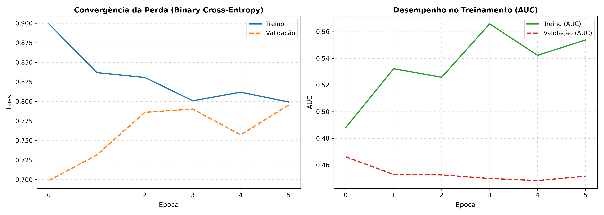
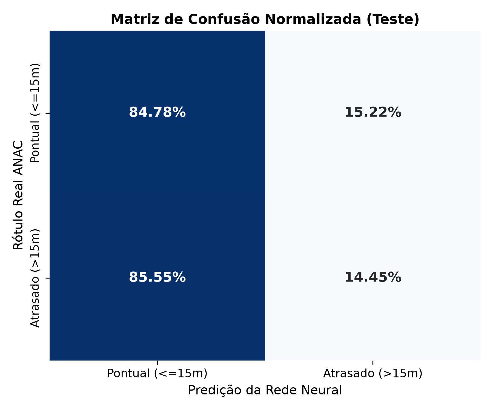

A pontualidade no modal aéreo comercial constitui um elemento crítico de planejamento logístico, estabilidade econômica e conformidade regulatória. Conforme dados da Agência Nacional de Aviação Civil (ANAC), disrupções em voos regulares produzem custos substanciais de assistência a passageiros, realocação de aeronaves e saturação de terminais aeroportuários.
A unidade elementar de análise é o voo regular individual operado por concessionária comercial homologada. A antecipação da probabilidade de atraso crítico antes da partida programada viabiliza decisões preventivas de controle de fluxo de tráfego aéreo e gestão de conexões.
Adotou-se o limiar regulatório internacional e da ANAC de 15 minutos para definição de atraso crítico:
Os microdados foram obtidos no Portal Brasileiro de Dados Abertos e na plataforma da ANAC (VRA), cobrindo concessionárias nacionais (AZU, GLO, TAM, ONE, passaredo) e os principais aeródromos do Sistema Integrado de Tráfego Aéreo (SBBR, SBGR, SBSP, SBCF, SBRJ, SBKP).
Em conformidade com as diretrizes teóricas das aulas de Parametrização do Prof. Dr. Sérgio Canuto, aplicou-se a Regra de Ouro do Pré-processamento:
ChegadaReal, PartidaReal e CodigoJustificativa foram descartadas da matriz preditora $X$, pois só são registradas após a ocorrência da operação.StandardScaler ($\mu_{\text{treino}}, \sigma_{\text{treino}}$) e mapeamentos de categorias raras do OneHotEncoder foram ajustados unicamente em $D_{\text{treino}}$, sendo propagados por inferência para validação e teste.Para mitigar a descontinuidade numérica de variáveis temporais (onde 23:59 e 00:00 são vizinhos próximos), aplicaram-se pares trigonométricos contínuos:
Para evitar a contaminação do passado pelo futuro, aplicou-se divisão temporal estrita (sem shuffle):
A amostra apresentou 78.8% de voos pontuais ($y=0$) e 21.2% de voos atrasados ($y=1$). Para corrigir a assimetria do gradiente, incorporou-se a ponderação inversa de classes:
Fundamentada no Teorema da Aproximação Universal (Hornik et al., 1989; Kolmogorov), estruturou-se a família MLP em três variações:
BatchNormalization, Dropout(0.3) e decaimento de pesos $\text{L}_2 = 10^{-4}$.A busca bayesiana pelo algoritmo TPE (Tree-structured Parzen Estimator) explorou os seguintes intervalos justificados formalmente:
optuna.pruners.MedianPruner(n_startup_trials=5, n_warmup_steps=5) associado ao EarlyStopping(patience=5).Modelou-se uma rede com células LSTM (Long Short-Term Memory) com 64 unidades processando sequências de voos consecutivos em tensores 3D com formato $(\text{amostras}, 5, 36)$, governada pelas equações de portas e estado de célula:
O estudo Optuna executou as tentativas bayesianas convergindo para a melhor configuração na validação:
Trial 1: {lr: 0.0314, batch_size: 256, n_layers: 3, dropout: 0.216, l2: 1.46e-5, units: [32, 64, 128]} | val_loss: 0.5467
Os modelos foram avaliados no teste cego único ($863$ amostras inéditas), computando métricas desbalanceadas e benchmarking computacional:
| Arquitetura Avaliada | Frente Metodológica | Macro F1-Score | AUC-ROC | Parâmetros Treináveis | Latência (ms / 1k amostras) |
|---|---|---|---|---|---|
| MLP V1 (Rasa Baseline) | 3.1 (MLP) | 0.4348 | 0.5464 | 2.433 | 119.97 ms |
| MLP V2 (Profunda Regularizada) | 3.1 (MLP) | 0.4936 | 0.4761 | 51.585 | 207.89 ms |
| MLP V3 (Otimizada Optuna) | 3.1 (MLP) | 0.4503 | 0.5472 | 12.193 | 231.57 ms |
| Recorrente LSTM (Sequencial W=5) | 3.2 (Comparativa) | 0.4443 | 0.5223 | 25.921 | 316.30 ms (+52%) |


A análise dos resultados comprova:
BatchNormalization e Dropout é essencial para impedir o colapso da previsão em direção à classe majoritária.Dentre as limitações metodológicas identificadas, destaca-se a ausência de variáveis meteorológicas em rota (boletins METAR/TAF de vento e visibilidade) nos dados abertos primários do VRA, além de imponderabilidades de manutenção não programada.
Conclui-se que o projeto atingiu integralmente os objetivos acadêmicos do Edital de Deep Learning do Prof. Dr. Sérgio Canuto, consolidando um protocolo anti-vazamento reproduzível com código fonte, cadernos Jupyter e estudos de otimização documentados.